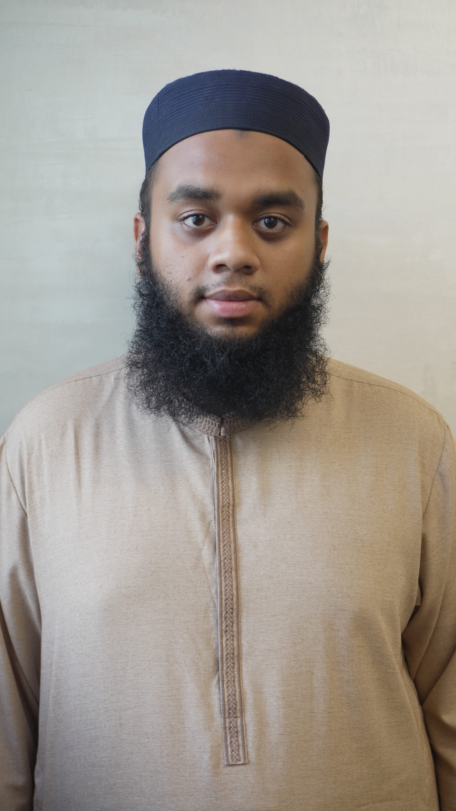

01
Medical Imaging
Utilizing architectures like YOLOv11, ViT, and Swin Transformers for complex segmentation, localization, and classification of clinical anomalies.
I specialize in computer vision and multimodal AI to solve complex clinical challenges. My goal is to build intelligent systems that automate critical processes and assist medical professionals.

I am fascinated by how computer vision can uncover patterns humans might miss. Whether interpreting medical scans or complex multimodal environments, I engineer solutions that scale.
Utilizing architectures like YOLOv11, ViT, and Swin Transformers for complex segmentation, localization, and classification of clinical anomalies.
Fusing image data with clinical history and reports. I am highly interested in how multimodal architectures translate across domains, from clinical AI to self-driving systems.
Moving beyond single-snapshot predictions to track patient progression over time, helping clinicians make better long-term prognosis decisions.
Extracting high-dimensional data from radiological scans to feed machine learning workflows for accurate survival prediction and tumor analysis.
Leading research on diabetic foot ulcer prognosis by organizing longitudinal patient data, clinical observations, and repeated wound images. This framework builds the critical multimodal data foundation required for predictive clinical models.
An end-to-end deep learning pipeline for real-time diabetic foot ulcer detection and precise instance segmentation, designed with a focus on deployment efficiency.
Source Code ↗A rigorous exploration combining the complementary feature representations of CNNs (ResNet) and Transformers (Swin) for robust, multi-class severity grading.
Source Code ↗Peer-reviewed literature and applied deep learning methodology.
Rauf Ahmed Shams Mallick, Khalid Khurshid Siddiqui. Curated a 1,800-image dataset annotated by medical professionals. Evaluated ViT + ResNet50 ensembles and Swin Transformers alongside YOLOv11m-seg for ulcer classification.
Read on Springer ↗Amna Farrukh, Khalid Khurshid Siddiqui, Faryal Raees, Rauf Ahmed Shams Mallick, Syed Ather Enam. Integrating preoperative MRI radiomic signatures with IDH mutation status for patient survival prediction utilizing UCSF-PDGM and AKU clinical datasets.
Long-form thoughts on the intersection of biological and artificial intelligence, engineering workflows, and clinical integration.
I write regularly on Substack about the challenges of moving medical AI from standard benchmarks to useful clinical tools.
Read Articles ↗Currently co-teaching OOP lab sessions to undergraduate students at Al Ghazali University, guiding them through foundational software engineering and programming paradigms.
Mentoring juniors on applied computer vision, including advising a student team developing a YOLO-based mobile navigation application for visually impaired users.
Helping peers organize experiment-tracking workflows, document PyTorch pipelines, and maintain strict evaluation protocols in the lab.
I am actively looking to collaborate with senior researchers, clinical teams, and engineers who have interesting datasets or complex vision problems. Connect with me on LinkedIn or via email.